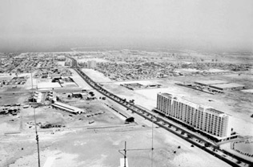
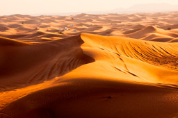

No es parla de Dubai com a ciutat fins a 1833, l’any en què la tribu Bu Flasa, liderada per la família Maktoum, es va assentar a les rodalies de Dubai Creek, la ria natural que es perllonga més de 10 quilòmetres a la terra. La manera de vida tradicional estava sustentat en la cria de bestiar, la recollida de dàtils, la pesca i la recol·lecció de perles. L'economia de Dubai va començar a enlairar-se en 1894 quan Sheikh Saeed Al Maktoum.
Al principi del sigla passat Dubai va comença a creixa poc a poc. Al primes anys la població es va centra en Bur Dubai i en Deira, però posteriorment comença a expandir-se per el camp. Des de els principis Dubai va estar molt lligada al comerç, en el 1908 hi ha existia més de 350 tendes especialitzades en Deira y 50 en Bur Dubai. La concentració i evolucions va dunar origen als Zocos (barris) actualment.
Al principis del anys 40, al fet en si de la pròpia guerra es va afegir l'aparició de perles cultivades al mercat. Eren èpoques de escassetat però Sheikh Saeed Al Maktoum aconsegeix subministrar menja a les 20.000 persones que hi ha estaven assentades en Dubai. En aquestes dates es van firmar un acord amb el Govern Britànic per busca petroli. En els anys 50 va comença a comercia amb l'or i va fer més gran al Dubai Creek per poder comercia per el mar.
Als anys 60, va marca el despertar de Dubai. Els fruits del treball de dècades, va comença a donar resultats, com el descobriment del petroli. Al final del 60, hi ha tenien la infraestructura per poder creixa lliurament, es van construí carreteres, ponts, xarxes de subministrament de llum i aigua, un bon sistema de telecomunicacions i l'aeroport. Al Sheikh Saeed Al Maktoum va comença a planificar el creixement de Dubai, com coneixem avui dia.
Als 80 Dubai va prosperar econòmicament, van amplia l’aeroport per donar allotjament a la recent aerolínea Emirates Airline, van construir complexos esportius i recreatius i va comença a pensar en el turisme com a fonts d’ingressos. Per aquella època es van descobrir nous llocs de gas i petroli.